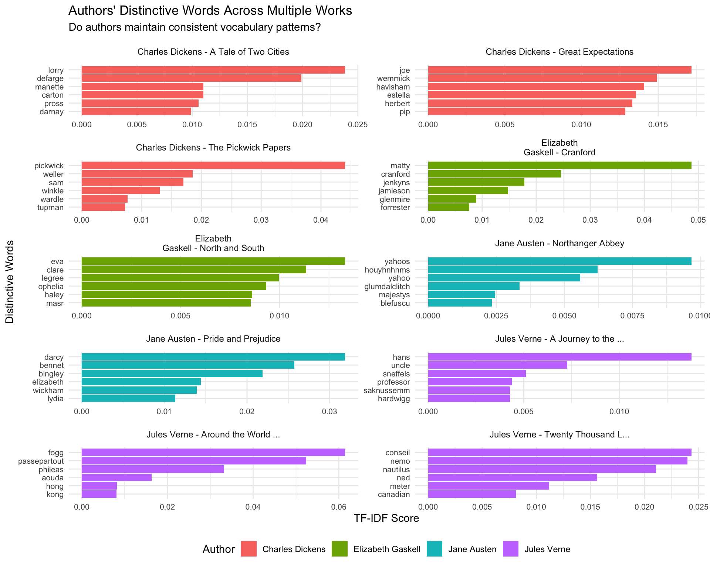
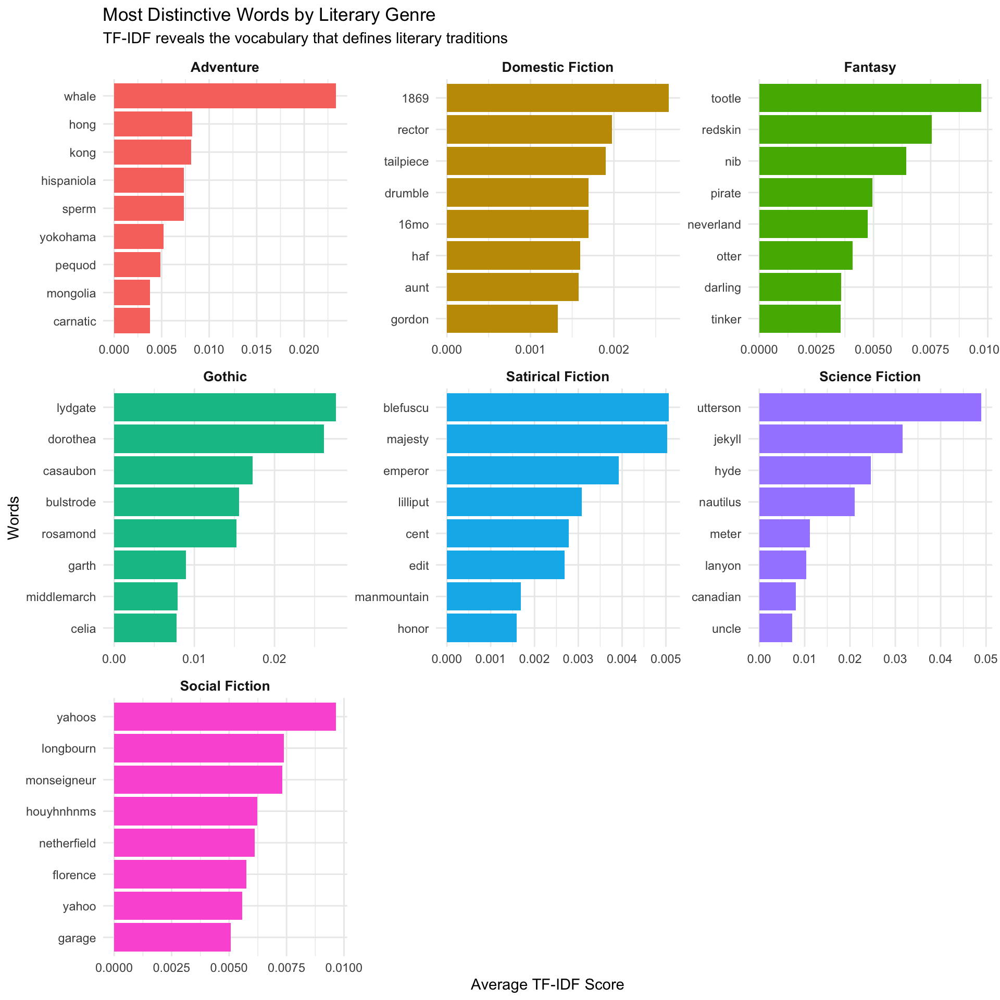

In the previous chapter, we explored basic text analysis techniques like word frequencies and lexical density. While these methods help us understand general patterns in our texts, they don’t tell us which words are truly distinctive or characteristic of specific authors, genres, or time periods.
This is where TF-IDF (Term Frequency-Inverse Document Frequency) becomes invaluable. TF-IDF helps us identify words that are not only frequent in a particular document, but also relatively rare across the entire corpus. This makes it an excellent tool for discovering what makes each text unique.
Why TF-IDF Matters
While simple word frequency tells us what words appear most often, TF-IDF tells us what words are most characteristic of a document. A word like “the” might be very frequent, but it appears in all documents. However, a word like “Darcy” might be moderately frequent in Pride and Prejudice but appear nowhere else in our corpus, making it highly characteristic of that specific novel.
What is TF-IDF?
TF-IDF combines two important concepts:
Term Frequency (TF): How often a word appears in a specific document
Inverse Document Frequency (IDF): How rare the word is across all documents in the corpus
Where: - \(\text{TF}(t,d)\) = frequency of term \(t\) in document \(d\) - \(\text{IDF}(t) = \log\left(\frac{\text{Total documents}}{\text{Documents containing } t}\right)\)
Understanding the Components
Term Frequency (TF) can be calculated in several ways: - Raw count: Simply how many times the word appears - Relative frequency: Raw count divided by total words in the document - Log normalization: \(1 + \log(\text{raw count})\) (used to dampen the effect of very high frequencies)
Inverse Document Frequency (IDF) gives higher weights to words that appear in fewer documents: - If a word appears in all documents, IDF approaches 0 - If a word appears in only one document, IDF is at its maximum - The logarithm smooths this relationship
Let’s explore this with our corpus!
Setting Up Our Analysis
Let’s work with our full corpus from the previous chapter, treating each book as a separate document for TF-IDF analysis. We’ll handle possessive forms by removing the ’s suffix during tokenization:
# Create our full corpus (25 classic works)corpus <-tribble(~author, ~title, ~year, ~glID, ~genre,"Jane Austen", "Pride and Prejudice", 1813, 1342, "Social Fiction","Charles Dickens", "A Tale of Two Cities", 1859, 98, "Social Fiction","F. Scott Fitzgerald", "The Great Gatsby", 1925, 64317, "Social Fiction","Mary Wollstonecraft Shelley", "Frankenstein; Or, The Modern Prometheus", 1818, 84, "Gothic","Herman Melville", "Moby Dick", 1851, 2701, "Adventure","Louisa May Alcott", "Little Women", 1868, 37106, "Domestic Fiction","Mark Twain", "Tom Sawyer", 1876, 74, "Adventure","Jonathan Swift", "Gulliver's Travels", 1726, 17157, "Satirical Fiction","E. M. Forster", "A Room with a View", 1908, 2641, "Social Fiction","Elizabeth Von Arnim", "The Enchanted April", 1922, 16389, "Social Fiction","Lewis Carroll", "Alice's Adventures in Wonderland", 1865, 11, "Fantasy","Elizabeth Gaskell", "Cranford", 1853, 394, "Domestic Fiction","Charles Dickens", "The Pickwick Papers", 1836, 580, "Social Fiction","J. M. Barrie", "Peter Pan", 1911, 16, "Fantasy","Charles Dickens", "Great Expectations", 1861, 1400, "Social Fiction","Robert Louis Stevenson", "Treasure Island", 1883, 120, "Adventure","Kenneth Grahame", "The Wind in the Willows", 1908, 27805, "Fantasy","Jules Verne", "Twenty Thousand Leagues Under the Seas", 1870, 2488, "Science Fiction","Jules Verne", "A Journey to the Centre of the Earth", 1864, 18857, "Science Fiction","Jules Verne", "Around the World in Eighty Days", 1873, 103, "Adventure","Bram Stoker", "Dracula", 1897, 521, "Gothic","H. G. Wells", "The Time Machine", 1895, 43, "Science Fiction","Charlotte Brontë", "Jane Eyre", 1847, 145, "Gothic","Jane Austen", "Northanger Abbey", 1817, 829, "Social Fiction","Elizabeth Gaskell", "North and South", 1855, 203, "Social Fiction")# Download and clean the textscorpus_texts <- corpus %>%mutate(text =map(glID, ~gutenberg_download(.x) %>%pull(text) %>%paste(collapse =" "))) %>%mutate(text_clean =str_to_lower(text) %>%str_remove_all("'s\\b") %>%# Remove possessive 's from full textstr_remove_all("[[:punct:]]") %>%# Remove remaining punctuationstr_squish() # Remove extra whitespace ) %>%select(author, title, year, genre, text_clean) # Keep all metadata columns
Determining mirror for Project Gutenberg from
https://www.gutenberg.org/robot/harvest.
Using mirror http://aleph.gutenberg.org.
corpus_texts
# A tibble: 25 × 5
author title year genre text_clean
<chr> <chr> <dbl> <chr> <chr>
1 Jane Austen Pride and Prejudice 1813 Soci… george al…
2 Charles Dickens A Tale of Two Cities 1859 Soci… a tale of…
3 F. Scott Fitzgerald The Great Gatsby 1925 Soci… the great…
4 Mary Wollstonecraft Shelley Frankenstein; Or, The Mod… 1818 Goth… frankenst…
5 Herman Melville Moby Dick 1851 Adve… mobydick …
6 Louisa May Alcott Little Women 1868 Dome… illustrat…
7 Mark Twain Tom Sawyer 1876 Adve… the adven…
8 Jonathan Swift Gulliver's Travels 1726 Sati… gulliver …
9 E. M. Forster A Room with a View 1908 Soci… illustrat…
10 Elizabeth Von Arnim The Enchanted April 1922 Soci… illustrat…
# ℹ 15 more rows
Calculating TF-IDF
The tidytext package makes calculating TF-IDF straightforward with the bind_tf_idf() function. Let’s start by tokenizing our corpus and preparing it for TF-IDF analysis.
To improve our thematic analysis, we’ll also apply lemmatization - a process that reduces words to their base forms (e.g., “whales” → “whale”, “running” → “run”). This helps us treat related word forms as the same concept, providing cleaner thematic patterns:
# Tokenize and prepare for TF-IDF with lemmatizationcorpus_words <- corpus_texts %>%select(title, author, genre, text_clean) %>%unnest_tokens(word, text_clean) %>%# Apply lemmatization to reduce words to their base formsmutate(word =lemmatize_words(word)) %>%anti_join(stop_words, by ="word") %>%count(title, word, sort =TRUE)# Display the structurecorpus_words %>%head(10)
# A tibble: 10 × 3
title word n
<chr> <chr> <int>
1 The Pickwick Papers pickwick 2346
2 The Pickwick Papers sir 1474
3 Little Women jo 1412
4 Moby Dick whale 1359
5 The Pickwick Papers sam 1194
6 The Pickwick Papers reply 1097
7 The Pickwick Papers weller 987
8 The Pickwick Papers gentleman 983
9 Cranford miss 869
10 Jane Eyre lydgate 858
Now let’s calculate TF-IDF scores:
# Calculate TF-IDFcorpus_tfidf <- corpus_words %>%bind_tf_idf(word, title, n)# Display the words with highest TF-IDF scorescorpus_tfidf %>%arrange(desc(tf_idf)) %>%head(20)
# A tibble: 20 × 6
title word n tf idf tf_idf
<chr> <chr> <int> <dbl> <dbl> <dbl>
1 Alice's Adventures in Wonderland alice 770 0.0489 2.53 0.124
2 Peter Pan wendy 332 0.0223 3.22 0.0717
3 Around the World in Eighty Days fogg 601 0.0243 2.53 0.0615
4 Around the World in Eighty Days passepartout 402 0.0163 3.22 0.0524
5 The Time Machine utterson 127 0.0152 3.22 0.0490
6 The Enchanted April wilkins 457 0.0193 2.53 0.0487
7 Cranford matty 345 0.0151 3.22 0.0487
8 Little Women jo 1412 0.0212 2.12 0.0450
9 The Pickwick Papers pickwick 2346 0.0208 2.12 0.0440
10 The Great Gatsby gatsby 190 0.0111 3.22 0.0356
11 Little Women meg 701 0.0105 3.22 0.0339
12 The Enchanted April fisher 373 0.0158 2.12 0.0334
13 Around the World in Eighty Days phileas 255 0.0103 3.22 0.0332
14 The Enchanted April arbuthnot 239 0.0101 3.22 0.0325
15 Pride and Prejudice darcy 380 0.00990 3.22 0.0319
16 The Time Machine jekyll 82 0.00982 3.22 0.0316
17 A Room with a View lucy 437 0.0195 1.61 0.0314
18 Little Women laurie 613 0.00922 3.22 0.0297
19 Jane Eyre lydgate 858 0.00860 3.22 0.0277
20 The Wind in the Willows toad 444 0.0217 1.27 0.0277
Let’s examine what these high TF-IDF words tell us about each book:
# Top TF-IDF words for each booktop_tfidf <- corpus_tfidf %>%group_by(title) %>%slice_max(tf_idf, n =10) %>%ungroup()top_tfidf
# A tibble: 251 × 6
title word n tf idf tf_idf
<chr> <chr> <int> <dbl> <dbl> <dbl>
1 A Journey to the Centre of the Earth hans 168 0.00545 2.53 0.0138
2 A Journey to the Centre of the Earth uncle 502 0.0163 0.446 0.00727
3 A Journey to the Centre of the Earth sneffels 49 0.00159 3.22 0.00512
4 A Journey to the Centre of the Earth professor 184 0.00597 0.734 0.00438
5 A Journey to the Centre of the Earth hardwigg 41 0.00133 3.22 0.00428
6 A Journey to the Centre of the Earth saknussemm 41 0.00133 3.22 0.00428
7 A Journey to the Centre of the Earth iceland 48 0.00156 2.53 0.00393
8 A Journey to the Centre of the Earth lava 49 0.00159 2.12 0.00337
9 A Journey to the Centre of the Earth granite 53 0.00172 1.83 0.00315
10 A Journey to the Centre of the Earth raft 88 0.00285 1.02 0.00292
# ℹ 241 more rows
Understanding the Results
Let’s examine what these distinctive words reveal:
# Display top words by book in a more readable formattop_tfidf %>%select(title, word, tf_idf) %>%mutate(tf_idf =round(tf_idf, 4)) %>%group_by(title) %>%summarise(top_words =paste(word, collapse =", "),.groups ="drop" )
# A tibble: 25 × 2
title top_words
<chr> <chr>
1 A Journey to the Centre of the Earth hans, uncle, sneffels, professor, ha…
2 A Room with a View lucy, bartlett, cecil, honeychurch, …
3 A Tale of Two Cities lorry, defarge, carton, manette, pro…
4 Alice's Adventures in Wonderland alice, gryphon, hatter, dormouse, du…
5 Around the World in Eighty Days fogg, passepartout, phileas, aouda, …
6 Cranford matty, cranford, jenkyns, jamieson, …
7 Dracula xury, friday, canoe, brazils, island…
8 Frankenstein; Or, The Modern Prometheus clerval, justine, felix, frankenstei…
9 Great Expectations joe, wemmick, havisham, estella, her…
10 Gulliver's Travels glumdalclitch, blefuscu, majesty, em…
# ℹ 15 more rows
Notice how the top TF-IDF words immediately reveal: - Character names: “alice” (Alice’s Adventures in Wonderland), “fogg” and “passepartout” (Around the World in Eighty Days), “matty” (Cranford) - Setting-specific terms: “sneffels” (A Journey to the Centre of the Earth), “blefuscu” (Gulliver’s Travels), “brazils” (Adventure novels) - Genre-specific vocabulary: Scientific and technical terms in Jules Verne works, fantastical locations in Swift’s satire
Visualizing TF-IDF
Rather than standard bar charts, let’s create visualizations that reveal the literary nature of our corpus and help us understand how TF-IDF captures the essence of different works.
Authors’ Distinctive Vocabularies
Let’s examine authors who have multiple works in our corpus to see their consistent vocabulary patterns:
# Focus on authors with multiple worksmulti_work_authors <- corpus %>%count(author, sort =TRUE) %>%filter(n >1) %>%pull(author)# Get top TF-IDF words for these authors' worksauthor_vocabulary <- corpus_tfidf %>%left_join(corpus %>%select(title, author), by ="title") %>%filter(author %in% multi_work_authors) %>%group_by(author, title) %>%slice_max(tf_idf, n =6) %>%ungroup() %>%# Create a combined identifier for better plottingmutate(work_id =paste(str_wrap(author, 15), "-", str_trunc(title, 20)))author_vocabulary %>%ggplot(aes(x =reorder_within(word, tf_idf, work_id), y = tf_idf, fill = author)) +geom_col() +scale_x_reordered() +coord_flip() +facet_wrap(~work_id, scales ="free", ncol =2) +labs(title ="Authors' Distinctive Words Across Multiple Works",subtitle ="Do authors maintain consistent vocabulary patterns?",x ="Distinctive Words",y ="TF-IDF Score" ) +theme_minimal() +theme(legend.position ="bottom",strip.text =element_text(size =9),axis.text =element_text(size =8) ) +guides(fill =guide_legend(title ="Author"))

Top TF-IDF Terms by Book
Before diving into systematic analysis, let’s create a simple reference list of the top 10 TF-IDF terms for each book:
# Create a clean reference list of top TF-IDF termstop_terms_by_book <- corpus_tfidf %>%group_by(title) %>%slice_max(tf_idf, n =10) %>%summarise(top_10_terms =paste(word, collapse =", "),.groups ="drop" ) %>%arrange(title)# Display as a clean tabletop_terms_by_book %>%mutate(title =str_trunc(title, 35),top_10_terms =str_wrap(top_10_terms, 60) ) %>% knitr::kable(col.names =c("Book Title", "Top 10 TF-IDF Terms"),caption ="Most distinctive words for each book in our corpus" )
Most distinctive words for each book in our corpus
Book Title
Top 10 TF-IDF Terms
A Journey to the Centre of the E…
hans, uncle, sneffels, professor, hardwigg, saknussemm,
The table above clearly shows that character names dominate TF-IDF results in literature. Looking at the terms, we can manually identify character names to separate them from thematic words for deeper analysis.
Thematic Words
Now let’s focus on the distinctive words that aren’t character names, to discover the thematic fingerprint of each work. We’ll create a comprehensive list of character names to exclude from our analysis:
Note
This list was created manually by identifying character names in the text that appeared as results in the table above and in the subsequent thematic fingerprint results. The process was repeated until we achieved this comprehensive list.
Rather than focusing on individual book uniqueness, let’s explore how TF-IDF can reveal the distinctive linguistic signatures of entire literary genres. By analyzing vocabulary patterns across books within each genre, we can identify the “thematic DNA” that characterizes different literary traditions:
# Create genre-level thematic fingerprintsgenre_fingerprint <- corpus_tfidf %>%# Remove character names from the analysisfilter(!word %in% character_names) %>%# Add genre informationleft_join(corpus %>%select(title, genre), by ="title") %>%# Calculate average TF-IDF by genre and wordgroup_by(genre, word) %>%summarise(avg_tf_idf =mean(tf_idf),books_with_word =n(),.groups ="drop" ) %>%# Get top distinctive words per genregroup_by(genre) %>%slice_max(avg_tf_idf, n =10) %>%summarise(distinctive_words =paste(word, collapse =", "),avg_distinctiveness =round(mean(avg_tf_idf), 4),.groups ="drop" ) %>%arrange(desc(avg_distinctiveness))# Display the resultsknitr::kable(genre_fingerprint, col.names =c("Genre", "Distinctive Vocabulary", "Avg TF-IDF"),caption ="Genre thematic fingerprints: the linguistic DNA of literary traditions")
Genre thematic fingerprints: the linguistic DNA of literary traditions
# Visualize genre distinctivenessgenre_word_analysis <- corpus_tfidf %>%filter(!word %in% character_names) %>%left_join(corpus %>%select(title, genre), by ="title") %>%group_by(genre, word) %>%summarise(avg_tf_idf =mean(tf_idf), .groups ="drop") %>%group_by(genre) %>%slice_max(avg_tf_idf, n =8)ggplot(genre_word_analysis, aes(x =reorder_within(word, avg_tf_idf, genre), y = avg_tf_idf, fill = genre)) +geom_col(show.legend =FALSE) +scale_x_reordered() +facet_wrap(~genre, scales ="free") +coord_flip() +labs(title ="Most Distinctive Words by Literary Genre",subtitle ="TF-IDF reveals the vocabulary that defines literary traditions",x ="Words", y ="Average TF-IDF Score") +theme_minimal() +theme(strip.text =element_text(size =10, face ="bold"))

Genre Vocabulary Patterns
This analysis reveals fascinating patterns in how different literary genres employ distinctive vocabularies:
Adventure Fiction: Geographic terms, maritime vocabulary, and travel-related words
Science Fiction: Technological terminology, scientific concepts, and futuristic elements
Gothic Literature: Atmospheric terms, supernatural vocabulary, and dark settings
Social Fiction: Dialect markers, social terminology, and contemporary references
Fantasy: Magical terms, mythical vocabulary, and imaginative concepts
What Genre Analysis Reveals
This genre-level TF-IDF analysis demonstrates several important insights:
Shared Literary Traditions: Authors within genres draw from common vocabularies that create recognizable literary voices
Thematic Coherence: Genre fingerprints reveal not just stylistic choices but fundamental thematic concerns
Reader Expectations: These vocabulary patterns help explain how readers can often identify genres from brief excerpts
Cultural Evolution: Genre vocabularies reflect the social, technological, and cultural contexts in which they were written
Interpreting TF-IDF Results
Our analysis reveals fascinating patterns in how different books and genres use distinctive vocabulary. Let’s examine the “thematic fingerprints” that TF-IDF has uncovered.
Individual Book Fingerprints
Each book in our corpus has developed its own linguistic signature through distinctive vocabulary:
Science Fiction works show the highest TF-IDF scores, with technical and fantastical terminology: - Twenty Thousand Leagues Under the Sea: nautilus, meter, canadian, underwater (avg 0.0077) - The Time Machine: morlocks, laboratory, sphinx, eloi (avg 0.0043) - A Journey to the Centre of the Earth: uncle, sneffels, professor, iceland (avg 0.0042)
Adventure novels feature location-specific and maritime vocabulary: - Moby Dick: whale, sperm, pequod, nantucket, whaling (avg 0.0067) - Around the World in Eighty Days: hong, kong, yokohama, bombay, steamer (avg 0.0054) - Treasure Island: hispaniola, squire, buccaneer, rum (avg 0.0038)